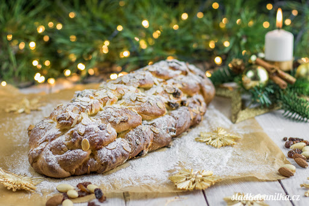

Chcete zemřít z vánočkou v puse?
Důvody proč:
- Je to ta nejlepší věc, kterou můžete sníst než zemřete
- Proč to nezkusit, když stejně zemřete
- Vánočka
- Vánočka
- Vánočka
- Vánočka
- VÁNOČKA
- VÁNOČKA!
- VÁNOČKA!!!
Recept:
Suroviny:
350 g hladké mouky
150 ml mléka
70 g rozpuštěného vlažného másla
70 g cukru krupice
30 g rozinek
30 g plátkovaných mandlí
20 g čerstvého droždí
1 vejce
1 lžíce vanilkového extraktu (nebo cukru)
1 lžička citronové kůry
vejce na potření
sůl
a upadlé oko
Postup:
Předtím než začnete nezapomente udělat rituál pro pána boha jménem SALDUS
1 Do mísy robota dejte mouku, cukr a špetku soli. Promíchejte a ve středu vytvořte
důlek.
Přidejte asi polovinu mléka a rozdrobte droždí. Rozmíchejte a zapracujte část mouky, abyste
vytvořili řídké těstíčko. Zakryjte a nechte kvásek vzejít – asi 15 až 20 minut. Kvásek zvětší
objem a
bude mít v sobě spoustu bublinek.
2 Ke kvásku a mouce přidejte zbylé mléko. Přidejte i vejce, rozpuštěné máslo, vanilkový
extrakt a citronovou kůru. Vložte hák na hnětení a hnětejte v robotu 7 minut. Přidejte
rozinky a ještě
chvíli prohnětejte. Těsto by mělo být hezky hladké a mělo by se odlepovat
od stěny mísy.
3 Těsto dejte do mísy, zakryjte fólií a nechte 60 minut kynout. Vykynuté těsto vyklopte
na
pracovní desku. Zvažte na váze a rozdělte na 6 stejně velkých dílů. Každý díl dlaní stočte
do
kuličky a nechte chvíli odpočinout. Poté jej dlaněmi rozválejte na pramen dlouhý asi 30 cm.
4 Prameny si rozložte na pracovní desku a postupně splétejte. Nespěchejte a pěkně
postupně
prameny překládejte. Jakmile máte upleteno, oba konce stiskněte a přeložte pod vánočku.
Tu
dejte na plech (vystlaný pečicím papírem), zakryjte a nechte kynout alespoň 60 minut, dokud
viditelně
nezvětší svůj objem.
5 Troubu si mezitím předehřejte na 180 °C. Jakmile je vánočka pěkně vykynutá, potřete jí
rozšlehaným vejcem a posypte mandlemi. Dejte do trouby, snižte teplotu na 160 °C a pečte asi
45
minut. V polovině vánočku zkontrolujte a jestli na povrchu příliš rychle zlátne, zakryjte
ji kouskem
alobalu. Upečenou vánočku dejte na mřížku a před zakrojením ji nechte úplně
vychladnout. Posypka z
moučkového cukru čistě nepovinná. Užívejte! :)

Tady je článek, abyste si uvědomili, na jakém místě jste.